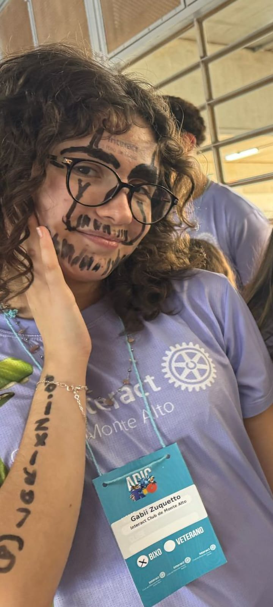

Tempo desde que nos conhecemos

-- anos -- meses -- dias -- horas -- minutos -- segundos
Essa pessoa é alguém que se tornou importante para mim, bem importante não sei se seria a palavra correta, já que essa pessoa é uma pessoa que pode se dizer que é quieta em seu canto, mas quando está com as amigas se solta um pouco mais, mas aconteceu dessa pessoa ser alguém que me apaixonei, lembro certinho o dia que nos conhecemos, foi em um aniversário de um amigo em comum, não conversamos muito, claro, achei essa pessoa linda, mas não era uma pessoa que ia atrás por conta de falta de confiança, aí nem pensei em falar nada em mandar mensagem só expectar, mas aí logo em seguida dois dias depois ela vei me chamar no WhatsApp que queria que eu fosse no aniversário dela de 15, não sei muito bem que sentimento tive, já que foi uma mistura de confusão, o sentimento de "porque ela tá me chamando?", mas tenho certeza que um foi de felicidade, lembro como se fosse ontem que teve alguém da festa, se for chutar falo que foi um de seus parentes, me fazendo a seguinte pergunta "você que é o namorado dela?", fiquei feliz mas na hora respondo não com uma cara triste. Depois da festa não conversamos muito me mandou um feliz aniversário, depois mandei um feliz aniversário para vc e só fomos falar mesmo quando o pessoal foi fazer o acampamento, fiquei fez em te ver mas estava namorando né ksksks, fiquei feliz por você, aí você entrou no IC, não sabe o quanto fiquei feliz, aí toda terça não faltei mais ksks, adorava quando você ia, e triste quando não ia. Bem agora você já sabe comecei a te mandar mensagem para o duolingo, bem no início só pensava em um jeito de ter um contato com você já, mas aí comecei a ter coragem e foi a primeira vez que me declarei né ksksskks, percebeu que foi bem de coração só né sksksk, bem aí comecei a gostar de conversar com você, aí comecei com o "bom dia" depois "boa noite", aí fiquei mais apaixonado e continuo até hoje, agora fazendo essa página percebi que tô totalmente apaixonado, e lembra que disse que não sabia se era importante, mas acabou sendo especial, amo muito você❤🫶🏻❤
Gostaria de Namorar Comigo?